Aerodynamic Design of a Fowler Flap for a Hybrid Laminar Flow Control Airfoil
Studienarbeit focused on maximizing the lift coefficient (CL,max) of a Fowler flap on an HLFC airfoil with fixed drooping nose, targeting takeoff (15° deflection) and landing (30° deflection) configurations.
Through mesh sensitivity analysis, parametric studies, and manual One-At-A-Time (OAT) optimization using the PyAeroSweep framework (Fidelity Pointwise + SU2 steady RANS), over 1,000 CFD simulations were conducted. The optimized design achieved 4.14% higher CL,max at 15° and 4.56% higher CL,max at 30° compared to the baseline, with improved flow attachment and reduced slot instabilities.
This project was completed at the Institute of Aircraft Design and Lightweight Structures (IFL), TU Braunschweig, under the supervision of Prof. Dr.-Ing. Ingo Staack and Dr.-Ing. Stanislav Karpuk, within the SE2A Cluster of Excellence – Sustainable and Energy Efficient Aviation.
My Role
- Adapted PyAeroSweep framework for 2D airfoil high-lift CFD
- Conducted mesh and parameter sensitivity studies
- Performed One-At-A-Time (OAT) optimization across 10 geometric parameters
- Analyzed flow physics, pressure distributions, and separation behavior
- Evaluated and compared final designs against baseline
Tools & Methods
- PyAeroSweep (Python automation framework)
- Fidelity Pointwise (structured meshing)
- SU2 (RANS CFD with k-ω SST turbulence model)
- ParaView (flow visualization)
- PARSEC airfoil parameterization
- MS Excel & Python (post-processing and data analysis)
Skills Demonstrated
CFD & Aerodynamics
SU2 RANS (k-ω SST) High-Lift Optimization Flow Separation AnalysisMeshing & Automation
Fidelity Pointwise PyAeroSweep Python Scripting Parametric StudiesPost-Processing & Tools
ParaView MS Excel (Data Analysis) Linux EnvironmentMotivation
Driven by EU Flightpath 2050 goals for 75% CO2 reduction per passenger-km and 90% NOx cut. Global efforts, like ICAO's CORSIA and Airbus's zero-emission concepts (e.g., ZEROe), emphasize innovations in aerodynamics, engines, and fuels. High-lift devices like Fowler flaps are key, boosting maximum lift by up to 100% during low-speed phases (takeoff/landing), which directly cuts fuel use and emissions.
This project optimizes a Fowler flap on an HLFC airfoil to maximize lift while maintaining efficiency, addressing challenges like flow separation and drag. By integrating HLFC technologies (e.g., boundary-layer suction), it supports breakthrough designs for fuel-efficient aircraft. My work refines flap parameters to improve CL,max, contributing to safer, greener operations—aligning with industry focuses on advanced wing systems.
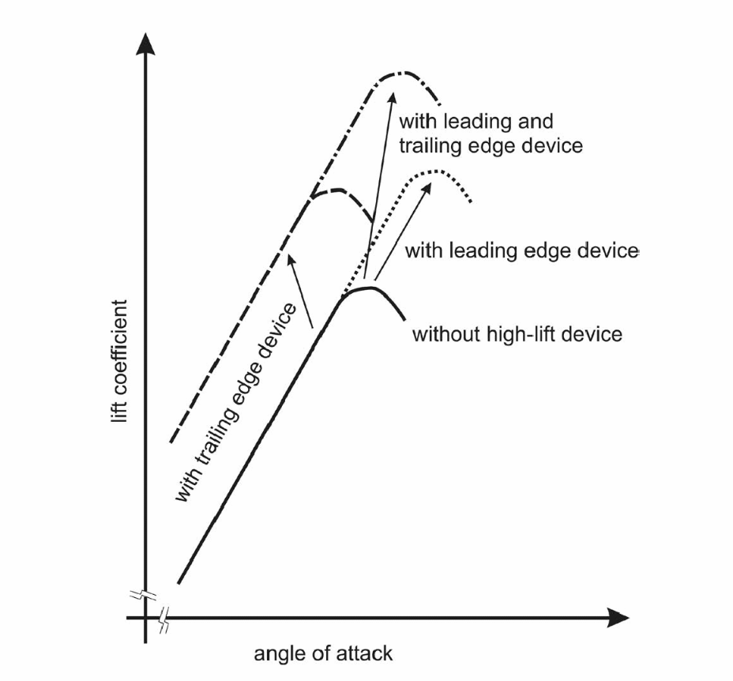
Figure: Effect of high-lift devices on CL vs α
Source: J. Wild, “High-Lift Aerodynamics”, CRC Press, 2022
Methodology
Adapted the PyAeroSweep framework for fully automated CFD analysis of an HLFC airfoil equipped with a Fowler flap. The workflow integrates four key stages:
1. Geometry Definition
- Employed PARSEC parameterization for the main airfoil, fixed 15° droop nose, and Fowler flap
- Key flap design variables: chord ratio (cf_c = 0.3), horizontal/vertical gaps (x_gap, y_gap), leading-edge radius (r_le_flap), and deflection angles (δf = 15°/30°)
- These parameters control slot geometry and flow attachment (baseline values in report Table 2.2)
2. Mesh Generation
- Used Fidelity Pointwise to generate hybrid unstructured meshes (triangular core + T-Rex anisotropic prismatic layers near walls)
- Targeted Y+ ≈ 1 for accurate boundary-layer resolution
- Typical settings: maximum 100 T-Rex layers, full 60 layers, growth rate 1.15, initial spacing calculated from Reynolds number and skin-friction coefficient
3. CFD Simulation
- Steady RANS simulations with SU2 open-source solver
- Turbulence model: k-ω SST (well-suited for adverse pressure gradients and separation on flaps)
- Freestream conditions: Mach 0.21, sea-level altitude, AoA sweeps from -2° to stall
- Convergence criteria: density residual drop, Cauchy criterion on CL (ε = 5×10-7), max 25,000 iterations
4. Post-Processing
- Extracted aerodynamic coefficients (CL, CD, etc.) from SU2 .csv history files using MS Excel
- Visualized flow fields (velocity contours, separation zones, pressure distributions) in ParaView from .vtu output
This automated pipeline enabled over 1,000 simulations while maintaining a balance between computational cost and numerical accuracy—essential for practical parametric optimization studies.
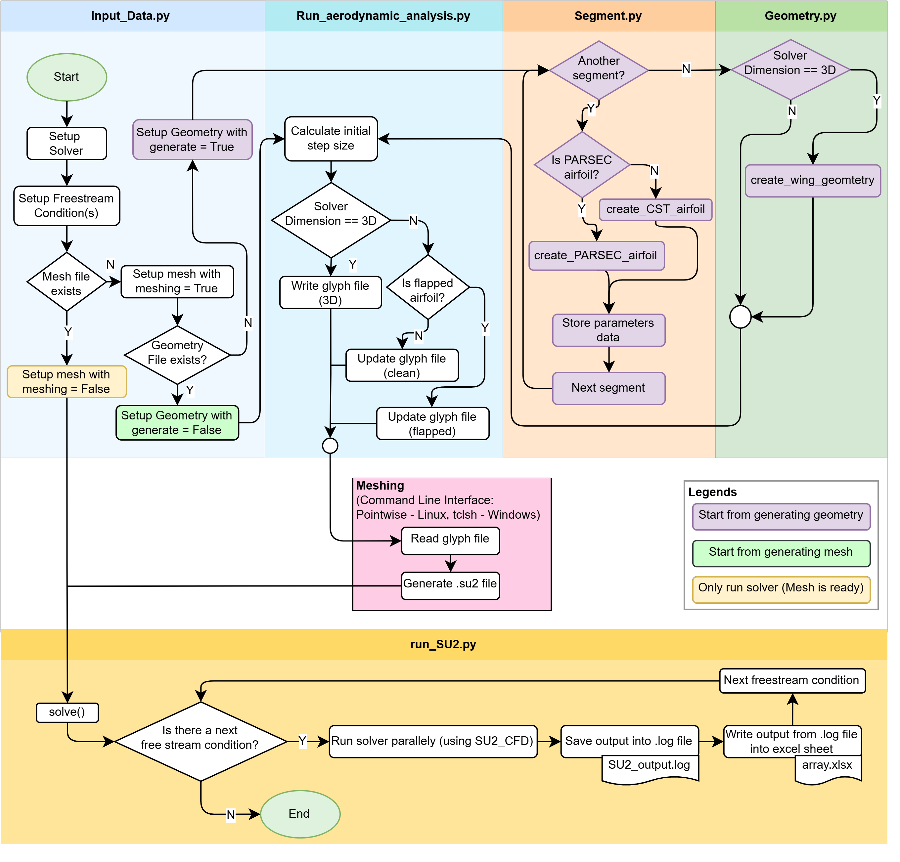
Figure: PyAeroSweep Framework.
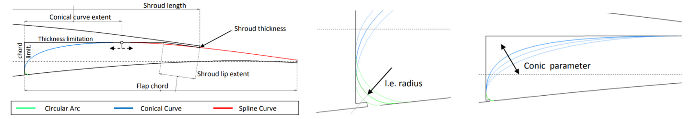
Figure: Flap design parameters and flap leading edge design parameteres.
Source: Minervino et al., EUROGEN, 2011
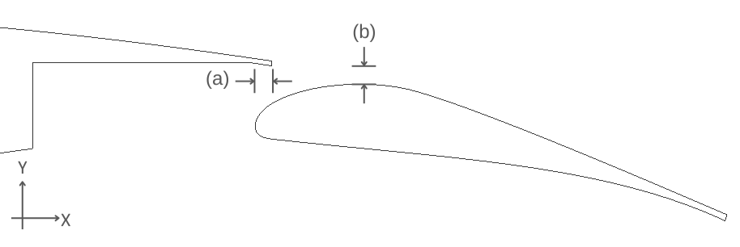
Figure: (a) Horizontal overlap (x_gap) and (b) vertical gap (y_gap), critical for optimizing channel flow through the slot.
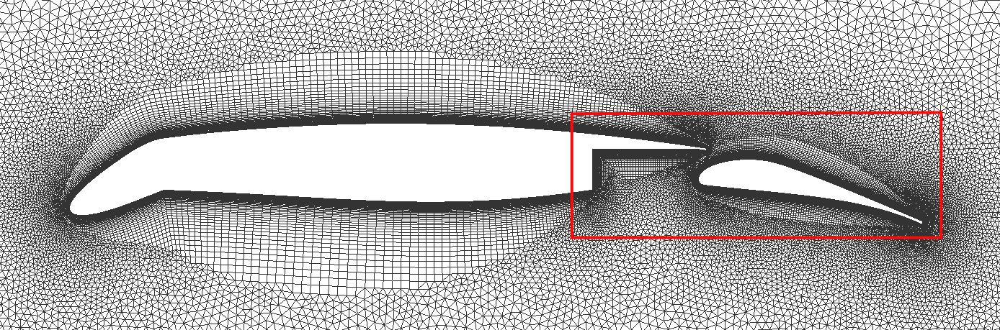
Figure: Full view of the hybrid unstructured mesh.
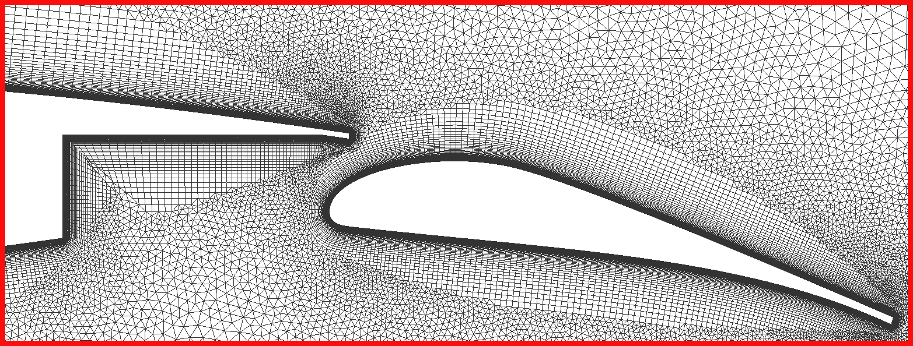
Figure: Close-up of the mesh around the Fowler flap, showing prismatic layers for viscous resolution.
Mesh Sensitivity
Tested coarse (≈84k cells), baseline (≈112k cells), and fine (≈138k cells) meshes at 15° flap deflection. The baseline mesh was selected due to only a 0.27% difference in CL,max from the fine mesh, while offering significantly lower computational cost—essential for conducting over 1,000 parametric runs in the optimization study.
| Mesh Type | Cell Count | CL,max | Δ from Baseline (%) |
|---|---|---|---|
| Fine | 138,244 | 2.956 | +0.27 |
| Baseline | 111,992 | 2.948 | 0.00 |
| Coarse | 84,225 | 2.956 | –0.71 |
Table: Mesh convergence results (15° flap deflection)
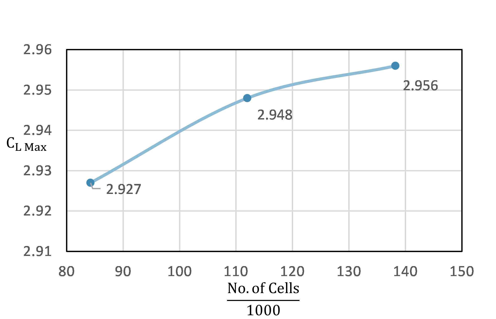
Figure: CL,max vs. number of cells – demonstrating grid independence
Parameter Sensitivity
- Conducted One-At-A-Time (OAT) parametric study to maximize CL at flap deflections of 15° (takeoff) and 30° (landing).
- Systematically varied 10 flap parameters individually while holding others fixed at baseline or current best values.
- AoA sweeps: 4°, 6°, 8°, 10–15° (1° steps near peak lift for higher resolution).
- Greater sensitivity observed at 30° deflection; primary focus shifted there.
- Most influential parameters: horizontal overlap (x_gap) and vertical gap (y_gap).
- Optimized values: x_gap reduced to ~0.75% chord and y_gap increased to ~1.97% chord.
- These changes improved slot channel flow, reduced instabilities, and contributed to higher CL,max.
- Less sensitive parameters included shroud lip extent and conical curve ratio.
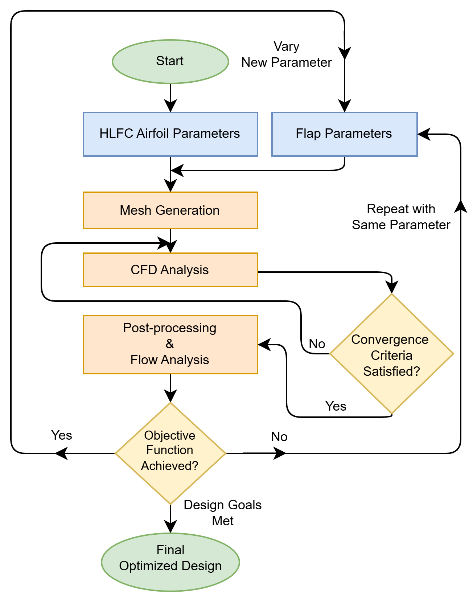
Key Improvements
The optimized Fowler flap achieved a 4.14% increase in CL,max at 15° deflection (takeoff) and a 4.56% increase in CL,max at 30° deflection (landing) compared to the baseline.
These gains result from larger slot gaps and refined shroud geometry, leading to improved lift-to-drag ratio at low angles of attack, reduced flow separation on the flap, and decreased instabilities in the slot channel flow across the tested angle-of-attack range.
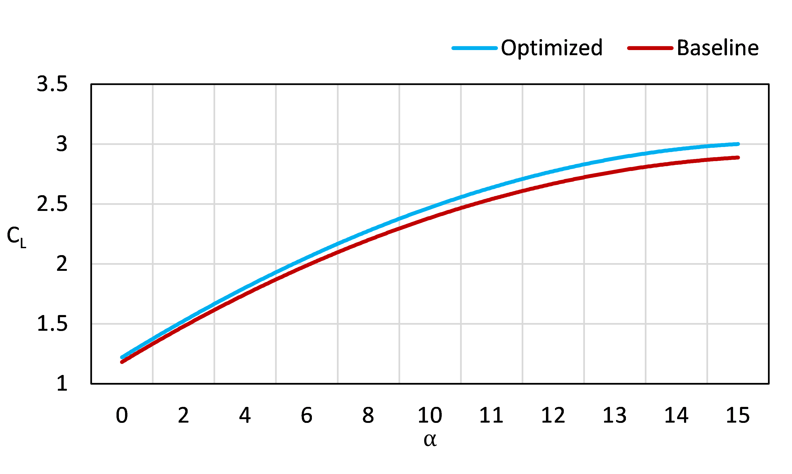
Figure: CL vs. α comparison — baseline vs. optimized (15° flap deflection, takeoff)
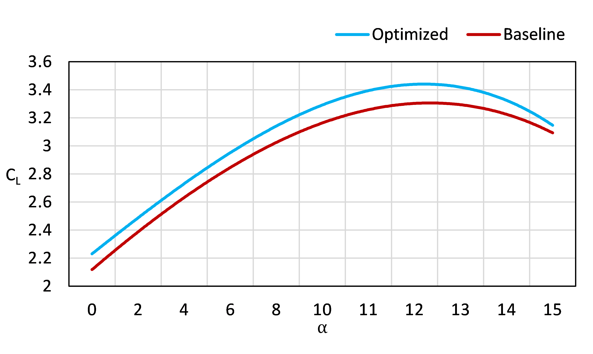
Figure: CL vs. α comparison — baseline vs. optimized (30° flap deflection, landing)
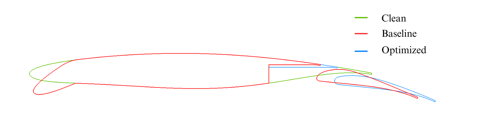
Figure: Clean (green), Baseline (red) and Optimized (blue) airfoil profiles at 15° flap deflection.
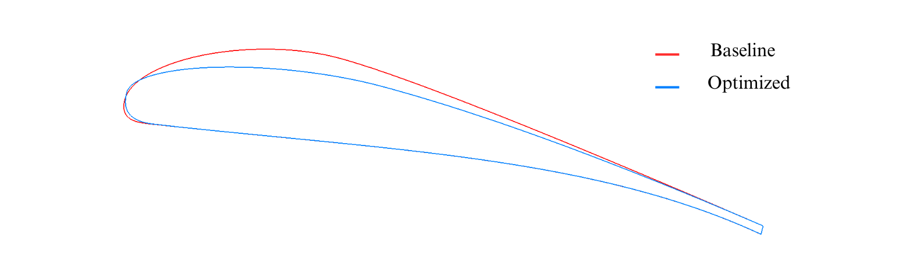
Figure: Baseline (red) and Optimized (blue) flap profiles.
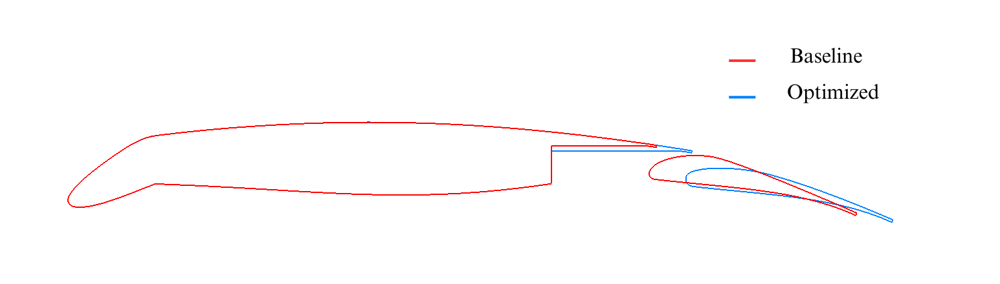
Figure: Baseline (red) vs. Optimized (blue) airfoil/flap profile at 15° deflection (takeoff configuration).
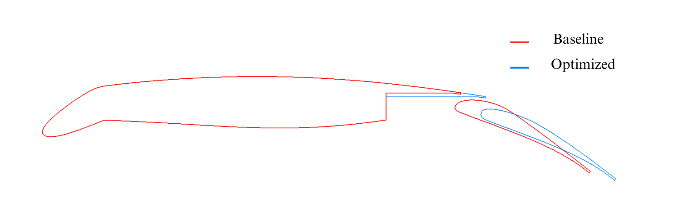
Figure: Baseline (red) vs. Optimized (blue) airfoil/flap profile at 30° deflection (landing configuration).
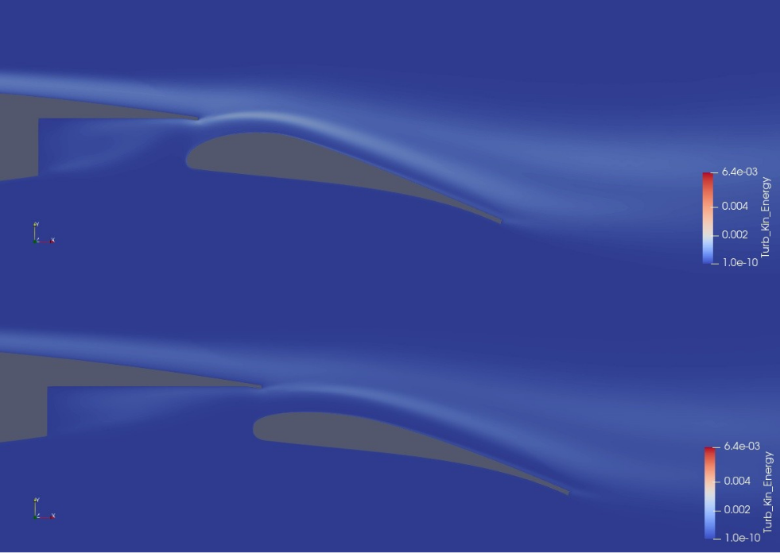
Figure: Turbulent kinetic energy contours: Baseline (Top) and Optimized (bottom) configurations at 15-degree AoA and 15-degree flap deflection.
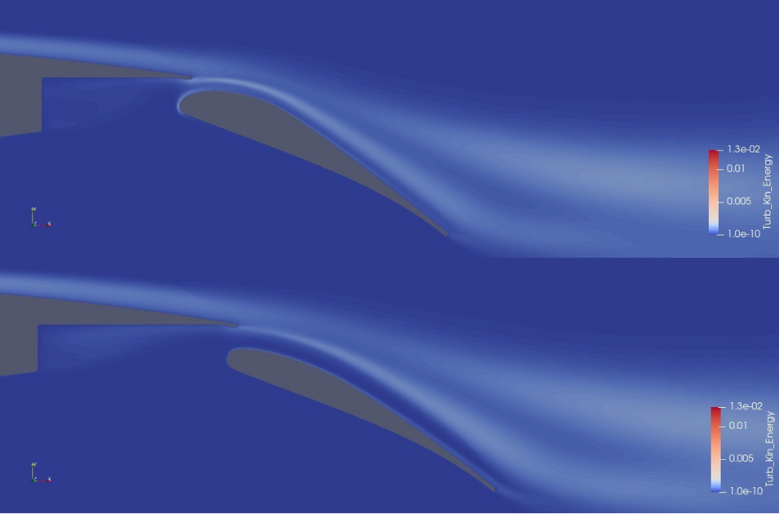
Figure: Turbulent kinetic energy contours: Baseline (Top) and Optimized (bottom) configurations at 13-degree AoA and 30-degree flap deflection.
Limitations & Future Work
Solver Framework (PyAeroSweep & SU2)
- Limited to steady RANS simulations (k-ω SST)
- Unsteady flow structures in separated regions and wakes not captured
- Impacts accuracy of drag, stall behaviour and detailed flow prediction
- Future: Explore URANS simulations for better handling of time-dependent effects
Workflow Stability
- Occasional PyAeroSweep crashes / incomplete output files
- Required frequent manual restarts and supervision
- Future: Improve script robustness and error handling to enable fully unattended runs
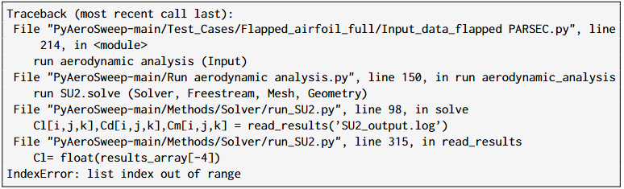
Figure: Example of PyAeroSweep workflow error in terminal
Mesh Quality & Computational Resources
- Equiangle skewness visible in flap cutout, shroud tip and flap leading edge
- Further refinement could improve flow resolution in critical regions
- Long simulation times on workstation (Intel i7-10700K, 32 GB RAM)
- Future: Use HPC cluster for finer meshes and faster parametric studies
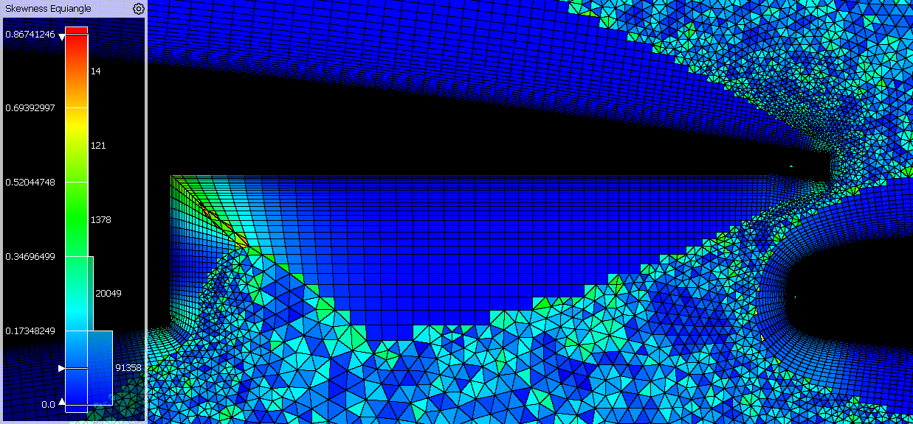
Figure: Equiangle skewness distribution – baseline mesh
Manual & Time-Intensive Process
- ~700 systematic + >300 failed/rerun cases → over 1,000 CFD runs total
- Semi-manual parameter variation, data extraction and post-processing
- Risk of data loss when restarting interrupted sweeps
- Future: Implement surrogate-based optimization (SBO) or automatic MDO algorithms
Despite these limitations, the obtained lift improvements demonstrate the value of the developed rapid CFD workflow for early-stage high-lift design studies.
Summary
This project optimized a Fowler flap for a Hybrid Laminar Flow Control (HLFC) airfoil to maximize lift during takeoff (15° deflection) and landing (30° deflection).
Using the PyAeroSweep framework with Fidelity Pointwise meshing and SU2 steady RANS (k-ω SST) simulations, a mesh sensitivity study established a reliable baseline grid. A detailed parametric study of flap design variables was conducted through over 1,000 CFD runs.
The final optimized design achieved a 4.14% increase in CL,max at 15° deflection and a 4.56% increase in CL,max at 30° deflection relative to the baseline. Flow visualizations confirmed improved flow attachment over the flap and reduced instabilities in the slot channel across the angle-of-attack range.
Despite limitations of steady RANS and manual workflow intensity, the study successfully met its objective and provides valuable insights into high-lift optimization for HLFC airfoils, establishing a foundation for future research with advanced methods.
Acknowledgments
- Prof. Dr.-Ing. Ingo Staack, Head of the Institute of Aircraft Design and Lightweight Structures (IFL), TU Braunschweig, for his overall supervision and support of the project.
- Dr.-Ing. Stanislav Karpuk, Junior Research Group Leader, Institute of Aircraft Design and Lightweight Structures (IFL), TU Braunschweig, for his primary supervision, extensive guidance, detailed technical feedback, and invaluable support with the PyAeroSweep framework throughout the project.
- Dr.-Ing. Valerio Mosca, Institute of Aircraft Design and Lightweight Structures (IFL), TU Braunschweig, for his thorough evaluation of the final report, insightful feedback, and constructive discussions on future directions.